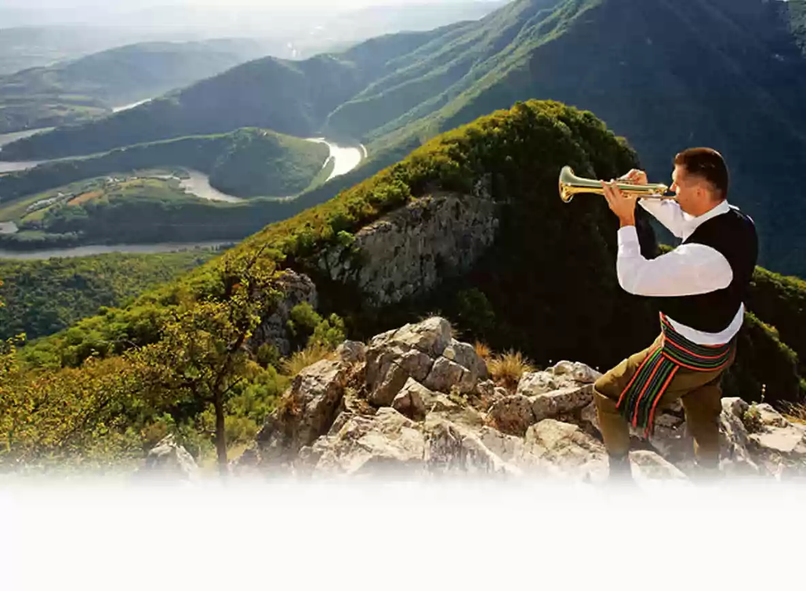
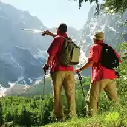
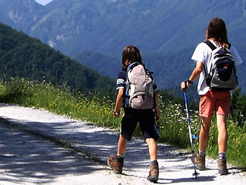

SRBIJA
Da biste upoznali neku zemlju, ljude i običaje najbolji način je pešačenje, ako vam vreme to dozvoljava. Stoletne šume, nepregledne ravnice, sela,
varoši i gradovi, vrhovi planina u Srbiji pravi su izazov za dobre pešake.
Pored rekreacije i fizičkog zadovoljstva, uživanja u prirodnim lepotama i retkostima, bićete u prilici da vidite i brojne kulturno-istorijske spomenike.

Na jugozapadu Srbije, 38 km od Valjeva, nalaze se Divčibare. Sa 980 m nadmorske visine ova planinska zaravan bogata šumom i vodom čini centralni deo
planine Maljen. Divčibare okružuju i planine Povlen i Suvobor, ispresecane rekama i potocima, kanjonima i liticama. Sudar primorske i karpatsko-
planinske klime čine je fabrikom crvenih krvnih zrnaca.
Na stablima drveća nalaze se planinarske oznake. Pešačke staze su lake, kreću od centra Dibčibara i duge su do par kilometara. Koristite patike, bolje
duboke. Središnji, niži deo planine je dosta vlažan. Planinarska staza do Suvobora 866 m, vrha Rajca 848 m i Planinarskog doma je teška i duga od oko
33 km.
Najveća planina u Vojvodini, dobila je od nemačkog „frišak“ (svež). Svežinu čine guste šume i Dunav pored koga se Fruška gora prostire. Desetak
manastira, jedna banja i više naselja pružaju mogućnost za predah između dve šetnje. U podnožju ove planine, s druge strane Dunava, nalazi se Novi Sad.
Obeležene staze su lake za kretanje. Dužina, talasast teren i pojedini usponi traže nešto veći napor. Koristite patike, uvek bolje duboke. Pešačke
staze su kružne i možete birati istočnu i zapadnu varijantu svake staze. Staze su prilagođene i za rekreativce i za sportiste, od par kilometara do 81
km, sa visinskim razlikama od 300 do 500 m.
Tri planine u centralnoj Srbiji – Goč, Stolovi i Željin, čine jedinstvenu turističku destinaciju. Ovaj masiv smešten na desnoj strani Ibarske klisure,
južno od Kraljeva. pruža više mogućnosti za aktivan boravak u prirodi.
Staze su lake za kretanje i kreću od Planinarskog doma, duge su od 8 do 27 km, sa visinskim razlikama od 700 do 1785 m. Na stazi do Željina, zbog
dužine od 27 km, potrebna je dobra fizička kondicija i planinarska obuća.

Gotovo netaknuta priroda Golije, rezervat biosfere nije bez razloga pod zaštitom UNESCO. Tri klimatske zone, dolinska sa brdskom, prelazna i planinska
pružaju pravu blagodet za boravak i aktivan odmor toliko potreban gradskom čoveku. Ova vazdušna banja sa nepreglednim pašnjacima, livadama, retkim
naseljima, gotovo bez industrije, ima najviši vrh Jankov kamen na 1833 m. Surove zime ili mirišljava leta i prirodna hrana nikoga nisu ostavili
ravnodušnim, pa neće ni vas.
Staze su lake za hodanje. Visinske razlike traže malo bolju kondiciju. Koristite patike, bolje duboke. Dužina kružnih staza je 9 i 12 km i kreću od
Golijske reke.
Jugozapadno od grada Majdanpeka prostire se venac Homoljskih planina. Guste stoletne šume, pećine, zlatonosna reka Pek, manastir Gornjak iz 14. veka
sazidan u steni, izvor reke Mlave bogat ribom (pastrmka), otvaraju brojne mogućnosti za rekreaciju i najrazličitije sportove.
U zavisnosti od interesovanja, Homoljske planine Vam nude različite programe pešačenja i planinarenja. Za početnike staza je 3 km. Onim iskusnijim
nudi se programi od 8 do 30 km. Dužina staza i nešto veće visinske razlike (od 75 do 940 m) traže kondiciju. Pogodnija je planinarska lakša obuća,
dolaze u obzir i duboke patike.
Kopaonik je najveći planinski masiv u Srbiji i Nacionalni park. Pruža se od severoistoka ka jugoistoku u dužini od oko 80 km, sa Pančićevim vrhom na
2017 m. Sneg od novembra do maja, i blizu 200 sunčanih dana godišnje ovu planinu svrstava u jednu od najpogodnijih za sve vrste sportova, kako na snegu
tako i tokom leta.
Organizovane su različite pešačke ture u pratnji vodiča. Staze su pogodne za hodanje, a njihovu težinu određuje dužina i visinska razlika, koja je
velika u odlascima na Semeteško jezero i vodopad Jelovarnik. Za duže staze od 10 do 24 km preporučujemo lake planinarske cipele, za ostale staze patike,
bolje duboke.
Planina Rudnik dominira Šumadijom. Zbog svojih povoljnih klimatskih uslova – velika osunčanost, vazdušna strujanja, visoka jonizacija vazduha i
nezagađena prirodna sredina – još 1922. proglašen je za vazdušnu banju. Ima čak osam vrhova iznad 1000 metara.
Staze su za lake pešačke ture, u patikama, dužine od 4 do 20 km. Staza do Ostrovice ima strm uspon ka stenovitom vrhu i potrebna je bolja obuća i
planinarsko iskustvo.
Stara planina je najviša planina u istočnoj Srbiji, 70 km udaljena od Niša. Najviši vrh je Midžor 2169 m, nešto niži je vrh Babin Zub 1740m, gde se
nalazi istoimeni planinarski dom i hotel. Dobri smučarski tereni, veliko veštačko jezero, manastir Temska iz 16. veka, reka Temska bogata ribom,
lekovito bilje i gljive samo su neki od turističkih potencijala.

Dužina i visinska razlika stazu čine srednje teškom. Potrebna je laka planinarska obuća. Izlazak na stenoviti kompleks Babin Zub je lak, a eventualno
penjanje na pojedine stenovite formacije traži planinarsko iskustvo.
Smestivši se između reke Drine i Zlatibora, planina Tara vekovima očarava sve koji na nju stižu. Od Bajine Bašte do Tare potrebno je preći 16 km da bi
se našli na izvoru čak 18 planinarskih staza. Ukupna dužina staza je preko stotinu kilometara, sa polaznim tačkama iz turističkih centara i planinarskih
punktova. Sa Predovog Krsta, na 1138 m, pruža se divan vidik na reku Drinu. Tu je i planinarski dom, a na reci Rači istoimeni manastir iz 13. veka.
Većina tura je laka i moguće je koristiti patike, bolje duboke. Ture kroz kanjon Rače su teške i neophodna je planinarska obuća. Vrlo je teška tura kroz
kanjon Brusnice, gde su potrebna planinarska oprema i vodič.
Planine Ovčar (985m) i Kablar (889m) nalaze se u centralnoj Srbiji, 160km južno od Beograda. Sa rekom Zapadnom Moravom čine živopisnu klisuru sa
prirodnim fenomenom – dvostrukim uklještenim meandrima. Ova klisura je ipak najpoznatija po svojim manastirima i svetilištima zbog čega je nazivaju i
Srpskom Svetom gorom. Zbog svoje izuzetne lepote, bogate flore i faune, devet manastira, kao i drugih vrednosti, Ovčarsko-Kablarska klisura proglašena
je Predeo izuzetnih odlika, zaštićeno područje I kategorije.
Planine Ovčar i Kablar poznate su planinarima i alpinistima još od pedesetih godina 20. veka, kada su trasirane i markirane prve staze. Danas postoji
10 markiranih staza, ukupne dužine preko 90km. Staze su raznovrsnih profila, tako da korisnici različitih nivoa spremnosti i planinarskog iskustva mogu
pronaći odgovarajuću maršrutu. Staze vode od Ovčar Banje ka vrhovima planina (visinske razlike su za Ovčar 706m, a za Kablar 610m).
Najveći broj staza vodi pored nekog od manastira. Posebno treba istaći vidikovce sa vrhova Ovčara i Kablara, uz napomenu da pogled sa Kablara
svrstavaju u najlepše u Srbiji. Pohodi sa polaskom iz Ovčar Banje do vrha jedne od planina i povratkom nazad (mogu se koristiti različite varijante
maršruta) su dužine od 10-15km i traju od 4 do 6 sati.